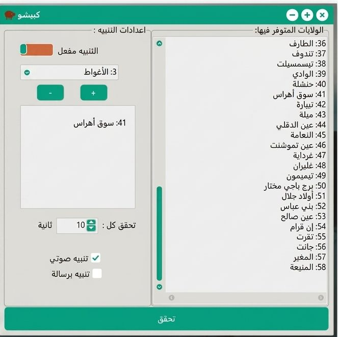

Kbicho طبيق سطح مكتب (Desktop Application) سريع وموجه خصيصاً لمساعدة "حارس صاحب مقهى إنترنت" . الوظيفة: يقوم التطبيق بالفحص التلقائي والمستمر لتوفر الأضاحي في الولايات المختارة. التنبيه: بمجرد ظهور أي عرض جديد، يُطلق التطبيق تنبيهاً صوتياً أو رسالة فورية لإشعار المستخدم دون الحاجة لمراقبة الشاشة طوال الوقت.
